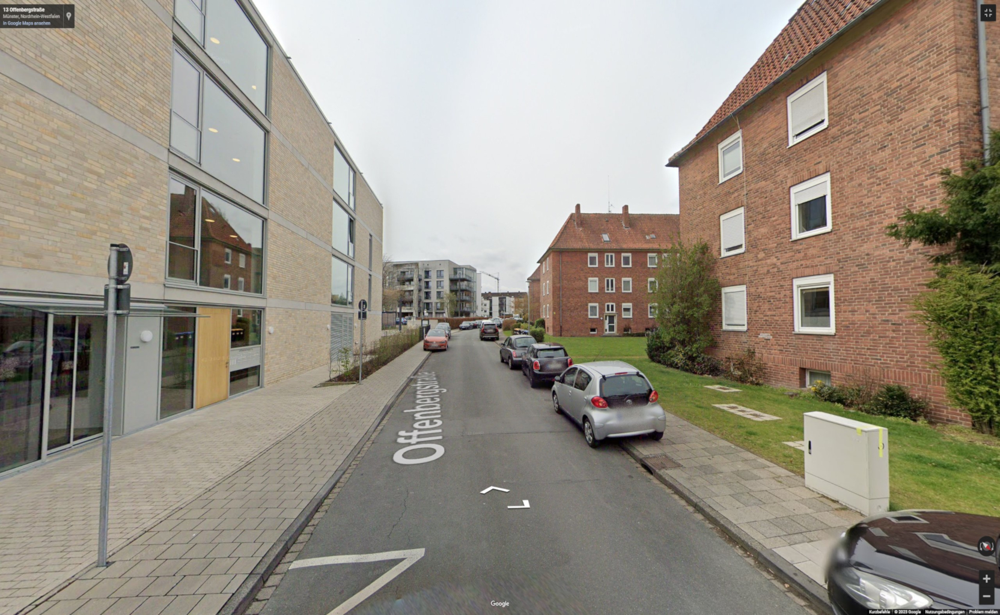
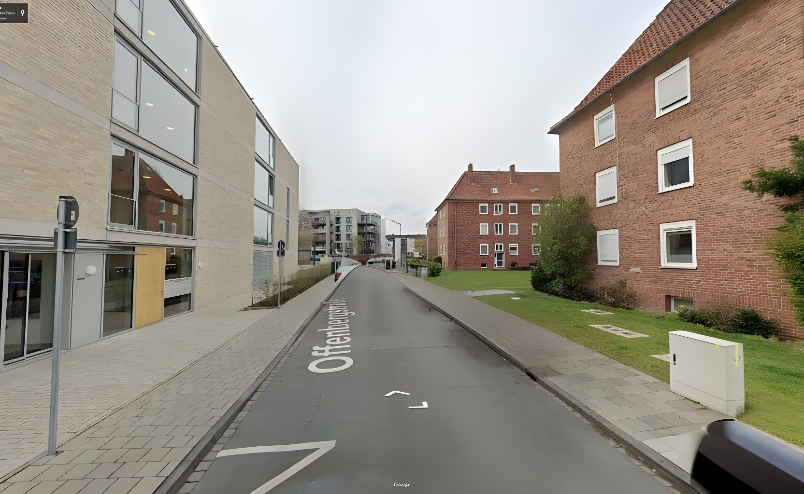

Vorher / Nachher


Vorher
Nachher
Ich möchte sehen, wie meine Straße ohne Autos aussieht.
Links zum Weiterlesen
Weiterführende Infos im Internet
- [Städte-Ranking carsharing](https://carsharing.de/alles-ueber-carsharing/carsharing-zahlen/carsharing-staedteranking-2022) (Ungefähr 1 Auto von 1000 Autos ist ein Sharing-Auto)
- [Anwohnerparken Münster (Zonen, Infos)](https://www.stadt-muenster.de/bewohnerparkausweis)
- [Zählung des Fahrzeugbestandes](https://www.kba.de/DE/Statistik/Fahrzeuge/Bestand/bestand_node.html) (Ungefähr 1000 Personen besitzen 700 Autos)
- [Stellplatzsatzung der Stadt Münster](https://www.stadt-muenster.de/recht/ortsrecht/satzungen/detailansicht/satzungsnummer/63.13)
- [Katja Diehl, warum ist Mobilität ohne Auto in Deutschland so schwer vorstellbar?](https://www.heise.de/hintergrund/Katja-Diehl-warum-ist-Mobilitaet-ohne-Auto-in-Deutschland-so-schwer-vorstellbar-9012425.html)
- [#Autokorrektur](https://katja-diehl.de/autokorrektur-was-ist-das-eigentlich/)
- [Pendleratlas](https://statistik.arbeitsagentur.de/DE/Navigation/Statistiken/Interaktive-Statistiken/Pendleratlas/Pendleratlas-Nav.html)
- [Münster Verkehr in Zahlen - Spannende Grafik zu Autonutzung (42 % mehrmals in der Woche](https://www.stadt-muenster.de/verkehrsplanung/verkehr-in-zahlen)
- [Mobilitätsbefragung – Münster 2019 PDF](https://www.stadt-muenster.de/sessionnet/sessionnetbi/vo0050.php?__kvonr=2004047857)
- [Die Forschungsgesellschaft für Straßen- und Verkehrswesen e. V. – kurz FGSV](https://www.fgsv.de/)
- [Integrierte Verkehrsplanung TU Berlin](https://www.tu.berlin/ivp)
- [Leitfaden zu Nahmobilität veröffentlicht](https://www.tu.berlin/ivp/nachrichtendetails/leitfaden-zu-nahmobilitaet-veroeffentlicht)
- [Nahmobilitätskonzepte für die Mobilitätswende im Quartier](https://mobilbericht.mobilitaet.tu-berlin.de/pdfs/Leitfaden_Nahmobilitaet.pdf)
- [Mobilitätsberichterstattung - Der Mensch im Fokus der Verkehrsplanung](https://mobilbericht.mobilitaet.tu-berlin.de/)
- [Kommunales Mobilitätsmanagement (Depomm)](https://depomm.de/mobilitaetsmanagement/kommunales-mobilitaetsmanagement)
Bücher und andere Druckwerke
- **Abgase & Lärm stellen Gesundheitsrisiko dar**: Krzyzanowski M., Kuna-Dibbert, B., Schneider, J. Eds.: Health effects of transport-related air pollution: summary for policy-makers. Hrsg.: World Health Organization Regional Office for Europe. Kopenhagen 2005, ISBN 92-890-1375-3, S. 12.
- *Superblocks verringern Verkehrs-, Stickoxid- und Lärmbelastung*: Natalie Mueller, David Rojas-Rueda, Haneen Khreis, Marta Cirach, David Andrés: Changing the urban design of cities for health: The superblock model. In: Environment International. Band 134, 1. Januar 2020, ISSN 0160-4120, S. 105132
- TU Wien empfielt flächendeckend Superblocks: Harald Frey, Ulrich Leth, Fabian Sandholzer, Florian Lorenz, Georg Wieser, Alexandra Millonig, Anita Graser, Johannes Müller, Gerald Richter, Christian Rudloff: SUPERBE. Schlussbericht. Berichte aus Energie- und Umweltforschung 05/2020. Bundesministerium für Verkehr, Innovation und Technologie, Wien Mai 2022, S. 75 ff.
- Einzelhandel wird durch autofreie Zonen gestärkt: Dirk von Schneidemesser, Jody Betzien: Local Business Perception vs. Mobility Behavior of Shoppers: A Survey from Berlin. In: Findings. 7. Juni 2021, S. 24497 / Alison Lee, Alan March: Recognising the economic role of bikes: sharing parking in Lygon Street, Carlton. In: Australian Planner. Band 47, Nr. 2, Juni 2010, ISSN 0729-3682, S. 85–93
- Zahl der Verkehrsunfälle sinkt in autofreien Quartieren: InnoRAD-Factsheet 4/6. Innovative Radverkehrslösungen auf Deutschland übertragen. Allgemeiner Deutscher Fahrrad-Club (ADFC), Berlin November 2020
- Frühe Einführung von Superblocks führt zu höherer Akzeptanz in der Bevölkerung: Christos Zografos, Kai A. Klause, James J.T. Connolly, Isabelle Anguelovski: The everyday politics of urban transformational adaptation: Struggles for authority and the Barcelona superblock project. In: Cities. Band 99, April 2020, S. 102613
Rechtliche Hintergrundinfos
- Dürfen Fahrräder auf Parkplätzen parken?
Quelle: https://www.bussgeldkatalog.org/fahrrad-parken/
- Fahrräder sind als Fahrzeuge der StVO untergeordnet -> dürfen auf Parkplätzen parken
ebenso wie PKWs platzsparend parken
- Wie lange darf ein KFZ an einer Stelle stehen?
Quelle: https://www.gesetze-im-internet.de/stvo_2013/__12.html
- Für Kraftfahrzeuge mit einer zulässigen Gesamtmasse unter 7,5 t gibt es keinerlei Einschränkungen was die Parkdauer angeht, solange die Fahrzeuge in einem verkehrssicheren Zustand geparkt sind.
- Mit Kraftfahrzeuganhängern ohne Zugfahrzeug darf nicht länger als zwei Wochen geparkt werden. Bei einer zulässigen Gesamtmasse über 2t ist auch das regelmäßige Parken zwischen 22-6 Uhr verboten (StVO §12 3a)
- Illegales Parken -> Problem so schlimm, dass es geduledet wird:
- StVO §12 (3) Das Parken ist unzulässig:
1. vor und hinter Kreuzungen und Einmündungen bis zu je 5,00 m von den Schnittpunkten der Fahrbahnkanten, soweit in Fahrtrichtung rechts neben der Fahrbahn ein Radweg baulich angelegt ist, vor Kreuzungen und Einmündungen bis zu je 8 m von den Schnittpunkten der Fahrbahnkanten,
2. wenn es die Benutzung gekennzeichneter Parkflächen verhindert,
3. vor Grundstücksein- und -ausfahrten, auf schmalen Fahrbahnen auch ihnen gegenüber
4. über Schachtdeckeln und anderen Verschlüssen, wo durch Zeichen 315 oder eine Parkflächenmarkierung (Anlage 2 Nummer 74) das Parken auf Gehwegen erlaubt ist,
5. vor Bordsteinabsenkungen
Foto- und Icon-Quellen
- Fahrrad Piktogramm: Fahrrad Icons erstellt von Freepik - Flaticon
- ÖPNV Piktogramm: Touristische Ikone. reise. Reisen mit dem Bus. Tourismus. – Vektor Illustration
- Bus: Stadtwerke
- Fahrrad: Stadt Münster
- Carsharing: Blauer Engel
- Loop: Stadtwerke
- PrioBike: Google